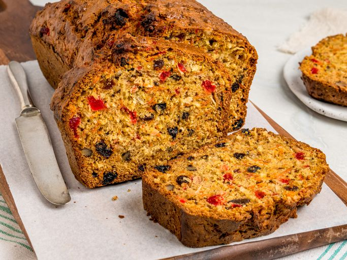
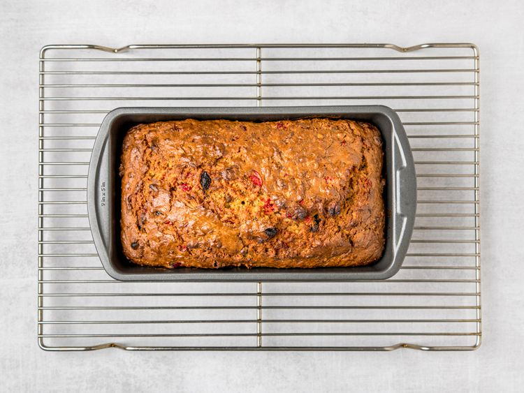

Home
Carrot Bread

Description
Carrot Bread is a warm, comforting loaf that combines the natural sweetness of carrots with the richness of spices like cinnamon and nutmeg. This moist, flavorful bread is dotted with tender bits of carrot, creating a perfect balance of texture and taste. Whether enjoyed as a breakfast treat, an afternoon snack, or a dessert, it’s a delightful way to indulge in something both wholesome and delicious. You can even add a sprinkle of walnuts or raisins for an extra touch of flavor!
Ingredients:
- 2 ½ cups all-purpose flour
- 1 cup white sugar
- 1 teaspoon baking powder
- 1 teaspoon baking soda
- 1 teaspoon ground cinnamon
- 1/2 teaspoon salt
- 3 large eggs, beaten
- 2 cups shredded carrots
- 1 (3.5 ounce) package flaked coconut
- 1/2 cup milk
- 1/2 cup vegetable oil
- 1/2 cup raisins
- 1/2 cup chopped walnuts
- 1/2 cup maraschino cherries, chopped
Steps to follow:
- Gather all ingredients. Preheat the oven to 350 degrees F (175 degrees C). Lightly grease a 9x5-inch loaf pan.
- Sift flour, sugar, baking powder, baking soda, cinnamon, and salt together in a large bowl.
- Combine eggs, oil, and milk in a separate bowl; stir into flour mixture until well blended.
- Stir in carrots, coconut, cherries, raisins, and walnuts.
- Pour batter into prepared loaf pan.
- Bake in the preheated oven until a toothpick inserted into center of the loaf comes out clean, about 50 to 60 minutes. Let cool on a wire rack for 10 minutes before removing from the pan to cool completely.
~Finished Product~
